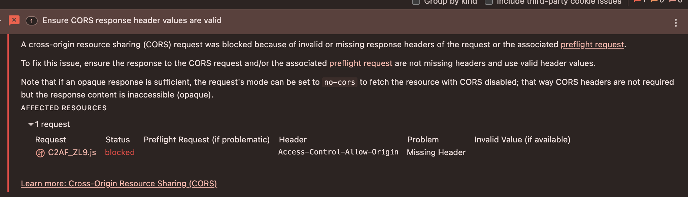
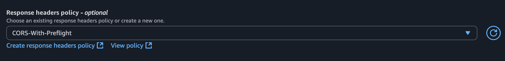
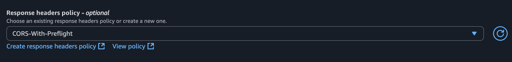

Sat, Nov 29, 2025
This was my second mission at the company, and I realized it was what I wanted to do—a first step towards DevOps.
First of all, the below diagram shows the existing architecture.

After deploying a monolithic Nuxt project on ECS, 500 errors can occur for about a minute. This usually happens because the large Docker image (~5 GB) slows container startup and Nuxt SSR page builds, and health checks may mark the container healthy before it’s fully ready. Once the initial build and caching complete, the server responds normally.
Docker image optimization - 5G -> 1GFROM public.ecr.aws/docker/library/node:18.17.0-alpine AS builder
RUN corepack enable
WORKDIR /app
COPY .npmrc package.json yarn.lock ./
RUN yarn install --production --frozen-lockfile
COPY . .
ARG NUXT_APP_CDN_URL
RUN NUXT_APP_CDN_URL=$NUXT_APP_CDN_URL yarn build
FROM public.ecr.aws/docker/library/node:18.17.0-alpine
WORKDIR /app
COPY --from=builder /app/node_modules ./node_modules
COPY --from=builder /app/.output ./.output
EXPOSE 3000
CMD [ "node", ".output/server/index.mjs" ]When writing a Dockerfile, one important tip is to leverage Docker layer caching by placing frequently changed parts at the bottom.
ECR remote cache : 20mins -> 12mins. We have to use buildx command for docker layer caching. Announcing remote cache support in Amazon ECR for BuildKit clients build:
commands:
- echo "Building the Docker image..."
- docker buildx create --use
- |
docker buildx build --build-arg NUXT_APP_CDN_URL="$CDN_URL/$COMMIT_ID" \
-t "$REPOSITORY_URI"/"$IMAGE_REPO_NAME":"$IMAGE_TAG" \
-t "$REPOSITORY_URI"/"$IMAGE_REPO_NAME":latest \
--cache-to mode=max,image-manifest=true,oci-mediatypes=true,type=registry,ref="$REPOSITORY_URI"/"$IMAGE_REPO_NAME":"$CACHE_IMAGE_TAG" \
--cache-from type=registry,ref="$REPOSITORY_URI"/"$IMAGE_REPO_NAME":"$CACHE_IMAGE_TAG" \
--push .
- docker create --name temp-container "$REPOSITORY_URI"/"$IMAGE_REPO_NAME":"$IMAGE_TAG"
- docker cp temp-container:/app/.output/public ./static
- docker rm temp-container

static resources separation : I will use the environment variable NUXT_APP_CDN_URL, which points to the CloudFront URL. During the Docker build, the static resources generated as artifacts are copied from the container to the server using the docker cp command. After the build, these files are synced to S3.ARG NUXT_APP_CDN_URL
RUN NUXT_APP_CDN_URL=$NUXT_APP_CDN_URL yarn build build:
commands:
- docker cp temp-container:/app/.output/public ./static
- docker rm temp-container
post_build:
commands:
- echo "Uploading static files to S3..."
- aws s3 sync ./static/ s3://"$BUCKET_NAME"/"$COMMIT_ID"Finally, I designed new architecture. BOOM!


This was the biggest issue after changing a new architecture. After the TTL expires, CORS errors occur due to client requests without an Origin header.
 

CORS preflight is a mechanism where the browser checks with the server before sending certain cross-origin requests (like POST, PUT, or requests with custom headers). The browser sends an OPTIONS request to ask if the actual request is allowed.
If the server doesn’t handle OPTIONS requests or return the proper CORS headers (Access-Control-Allow-Methods, Access-Control-Allow-Headers), the browser will block the request and raise a CORS error.
To fix this, you need to allow the OPTIONS method and configure CORS to handle preflight requests, ensuring that cross-origin requests can succeed safely.
I've worked as a frontend engineer for about 10 years. Looking back on my career, the thing I love the most about myself is that I really care about learning new things. When I worked on the projects above, I realized there were areas where I was lacking. To improve, I spent my weekends attending free courses for professionals. It was a great opportunity to strengthen my fundamental knowledge, and meeting people at the academy inspired me to work even harder.